Data Analysis and Research
The Smell Pittsburgh (Smell PGH) app has been active since September 2016. Over the past 3+ years, residents have utilized Smell PGH to submit over 40 thousand reports (as of May 2020) related to pollution odors. These data offer multiple accounts of the human impacts of air pollution and provide insights into the air quality landscape of our region. Collectively, the Pittsburgh community has engaged in documenting conditions of the air and has made connections between air quality and our health. To highlight patterns and insights in the thousands of Smell PGH reports, this page outlines data analyses curated by Dr. Yen-Chia Hsu from the CREATE Lab. These assessments are based on three full years of Smell PGH data from 2017, 2018, and 2019. In the sections below, we examine these data from several different aspects in order to understand:
- Levels and types of report submissions and public engagement
- How reports are distributed over time and neighborhood
- Patterns in the content of reports
- Links between smell reports and pollutants in the air
Summary of Findings
Use of the app in 2019 (17,974 reports, 6,406 users) was significantly higher than in 2018 (9,195 reports, 2,645 users) and in 2017 (8,112 reports, 2,237 users). Most residents who use the Smell PGH app were actively engaged, submitting more than one report in a given week and/or month. When looking at the Pittsburgh region, we saw greater engagement with the app across local zip codes over the three years spanning 2017 through 2019. Local air quality at a given time somewhat affected the level of engagement with Smell PGH, with more users interacting with the app during poor air quality conditions. The Smell PGH map, which visualizes smell reports across our region as well as local air quality data, was another significant aspect of engagement, with over 80% of app users interacting with the map.
When looking at overall submissions, most reports (over 70% in all three years) rate the pollution odor 3 or worse, on a scale of 1 to 5 (1 being just fine, and 5 being as bad as it gets). Smell PGH reports were primarily submitted during morning hours, and rarely at nighttime, and most user comments described industrial pollution odors and symptoms related to air pollution exposure. Odor descriptions and symptoms were frequently linked to hydrogen sulfide, which has a "rotten egg" smell and is known to cause symptoms of headaches, dizziness, eye irritation, sore throat, cough, nausea, and shortness of breath (Reiffenstein et al., 1992; Guidotti, 2010). These narratives align with our finding that hydrogen sulfide was a significant driver of smell reports in the three years from 2017 through 2019.
Using Smell PGH reports and air quality data from local monitoring stations, we developed a statistical model to predict upcoming smell events and send push notifications to inform communities. Our analysis indicated that odor pollution events in the Greater Pittsburgh region are related to the joint effect of wind directions and hydrogen sulfide readings. This research shows that engaging residents in documenting their experiences with pollution odors can help identify local air pollution patterns. For a more indepth report, please refer to our research publication, which can be downloaded here. The dataset and code utilized in this paper are publicly available on GitHub. The full citation of the research is shown below:
Yen-Chia Hsu, Jennifer Cross, Paul Dille, Michael Tasota, Beatrice Dias, Randy Sargent, Ting-Hao (Kenneth) Huang, and Illah Nourbakhsh. 2019. Smell Pittsburgh: community-empowered mobile smell reporting system. In Proceedings of the 24th International Conference on Intelligent User Interfaces (IUI '19). ACM, New York, NY, USA, 65-79. DOI: https://doi.org/10.1145/3301275.3302293
Distribution of Smell Reports and Users Over Time
To understand user engagement over time, we aggregated the number of smell reports and unique users by month (for 2017, 2018, and 2019), and also assessed the distribution of smell ratings by year. In general, user engagement (based on number of reports submitted) in 2019 (17,974 reports) was significantly higher than in 2018 (9,195 reports) and in 2017 (8,112 reports). The figure below shows the number of smell reports submitted per month for the three years 2017 through 2019.
Analysis of smell reports (2019)

Analysis of smell reports (2018)

Analysis of smell reports (2017)

Each time a resident submits a smell report, they select a rating for the smell from a scale of 1 to 5. The following table shows the distribution of smell report ratings for the years 2017, 2018, and 2019. Most reports submitted were rated higher than two, especially in 2019.
| Smell Rating | Description | 2019 | 2018 | 2017 |
|---|---|---|---|---|
| 1 | Just fine! | 1,711 (9.5%) | 1,199 (13.0%) | 1,658 (20.4%) |
| 2 | Barely noticeable | 798 (4.4%) | 497 (5.4%) | 665 (8.2%) |
| 3 | Definitely noticeable | 4,305 (23.9%) | 2,649 (28.8%) | 2,246 (27.7%) |
| 4 | It's getting pretty bad | 5,804 (32.3%) | 2,932 (31.9%) | 2,171 (26.8%) |
| 5 | About as bad as it gets! | 5,356 (29.8%) | 1,918 (20.9%) | 1,372 (16.9%) |
| Sum | 17,974 | 9,195 | 8,112 |
Similar to the increase in smell reports, we also saw an overall rise in the number of community members engaged with the app from 2017 to 2019 (6,406 unique users in 2019, 2,645 unique users in 2018, and 2,237 unique users in 2017). To estimate the number of unique users, we combined the results from Google Analytics and our customized tracker in the system. It is noteworthy that almost 50% of these unique users submitted more than one report each month in all three years from 2017 through 2019.
Analysis of unique users (2019)
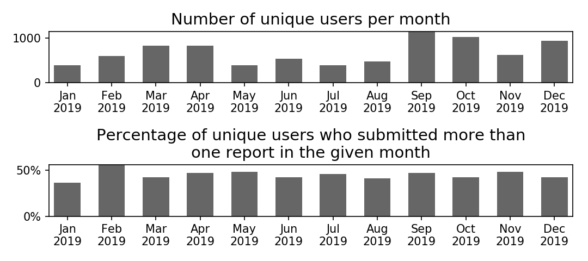Analysis of unique users (2018)
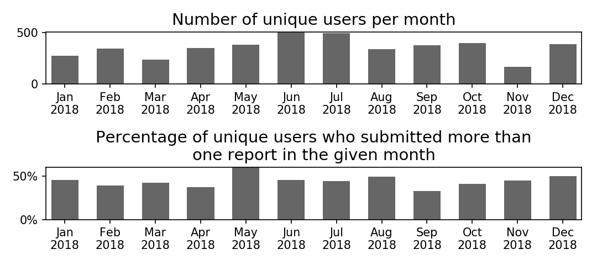Analysis of unique users (2017)
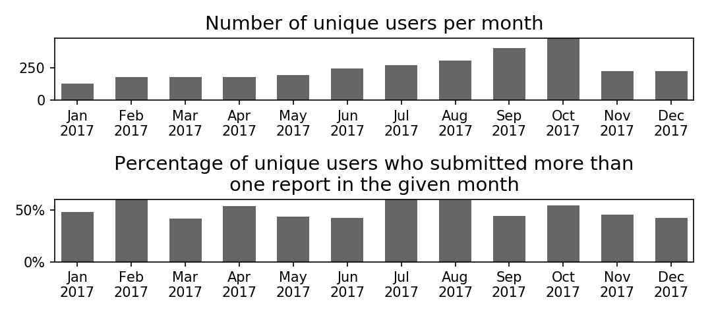We also wanted to understand how many of these community members were "actively" engaged with the app. For each report submitted, we assessed whether that same user logged another report within the previous 7 or 30 days. We then computed the total number of unique users who submitted a smell report in a given month and also submitted at least one other report 7 or 30 days before that time.
This metric of "active engagement" offers insight into the proportion of users who submitted smell reports at a higher frequency. The results show that on average, about 40% - 50% of users were actively engaged with the app. Below is the monthly breakdown of the number of unique users, along with the proportion of those users who actively reported odors.
Analysis of active users (2019)
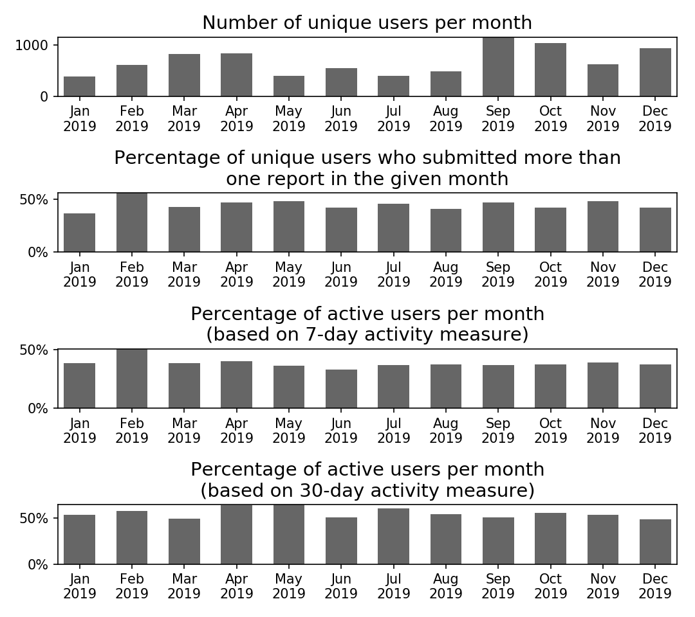NOTE: Our metric of "active users" was determined by examining each report submitted in a given month, and assessing whether that same user logged another report within the previous 7 or 30 days. We then aggregated the total number of unique users who submitted a report in the given month and also submitted at least one other report in the prior 7 or 30 days. This number of active users is expressed as a proportion of the total number of unique users in each month.
Analysis of active users (2018)
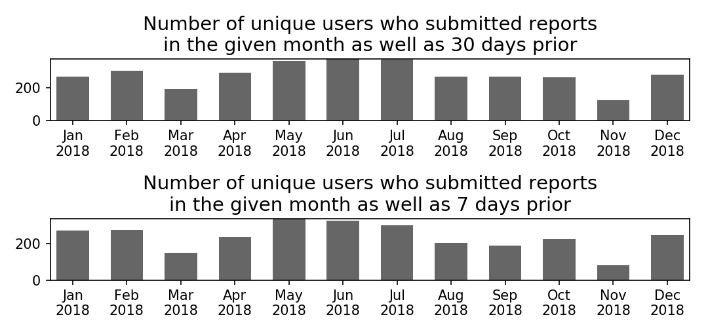NOTE: Our metric of "active users" was determined by examining each report submitted in a given month, and assessing whether that same user logged another report within the previous 7 or 30 days. We then aggregated the total number of unique users who submitted a report in the given month and also submitted at least one other report in the prior 7 or 30 days. This number of active users is expressed as a proportion of the total number of unique users in each month.
Analysis of active users (2017)
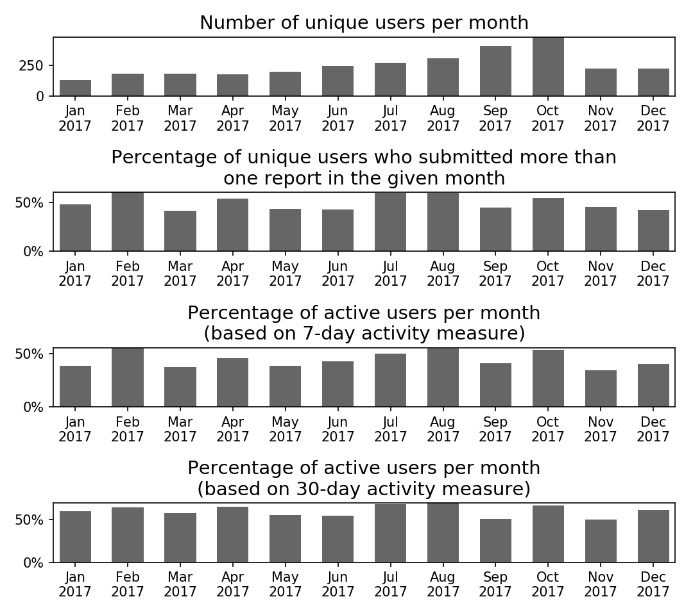NOTE: Our metric of "active users" was determined by examining each report submitted in a given month, and assessing whether that same user logged another report within the previous 7 or 30 days. We then aggregated the total number of unique users who submitted a report in the given month and also submitted at least one other report in the prior 7 or 30 days. This number of active users is expressed as a proportion of the total number of unique users in each month.
Analysis of User Engagement
We computed the number of unique users who submitted at least one smell report and used the map at least once, respectively. The number of interaction events with the map for each user was tracked anonymously using Google Analytics. This analysis shows that over 50% of our users contributed data, and over 80% of our users interacted with the map.
| Number of Unique Users | 2019 | 2018 | 2017 |
|---|---|---|---|
| Submitted Reports | 3,264 (51.0%) | 1,769 (66.9%) | 1,307 (58.4%) |
| Used the Map | 5,673 (88.6%) | 2,248 (85.0%) | 1,947 (87.0%) |
| Participated (N) | 6,406 | 2,645 | 2,237 |
The figure below shows the distribution of unique users who submitted at least one smell report, aggregated by the total number of submitted reports in a year.
Distribution of users by the number of submitted reports (2019)
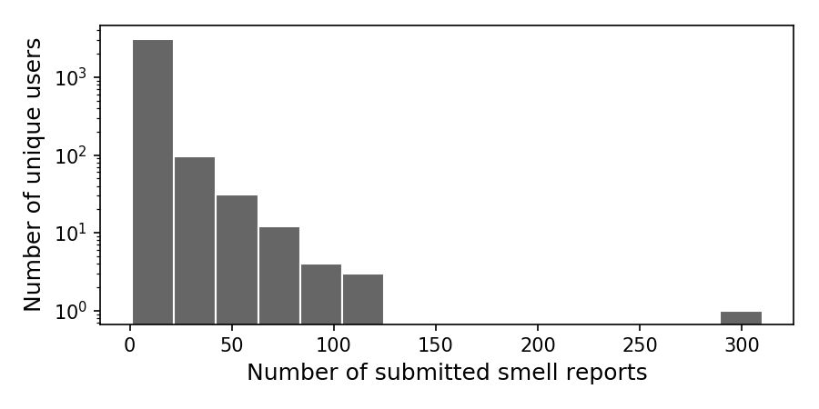Distribution of users by the number of submitted reports (2018)
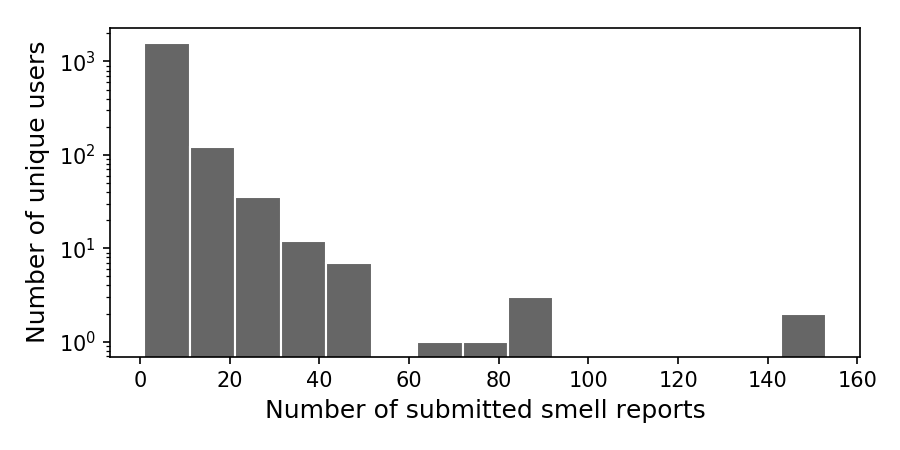Distribution of users by the number of submitted reports (2017)
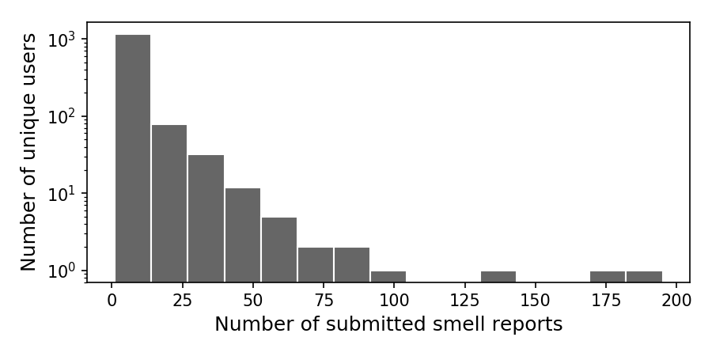The figure below shows the distribution of unique users who interacted with the map at least once, aggregated by the total number of interaction events in a year.
Distribution of users by the number of map interaction events (2019)
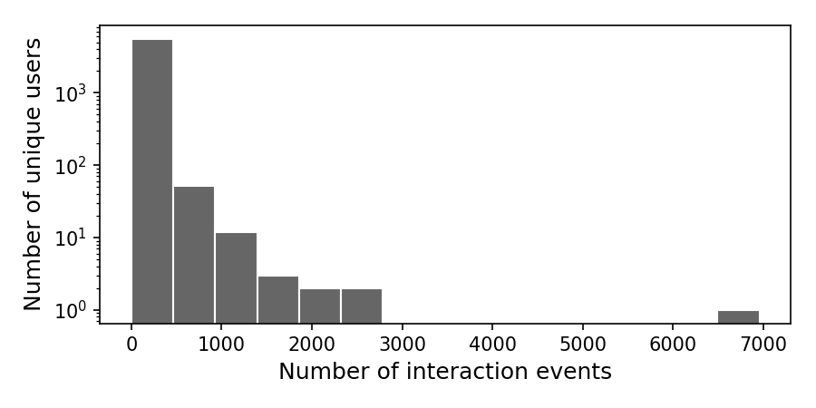Distribution of users by the number of map interaction events (2018)
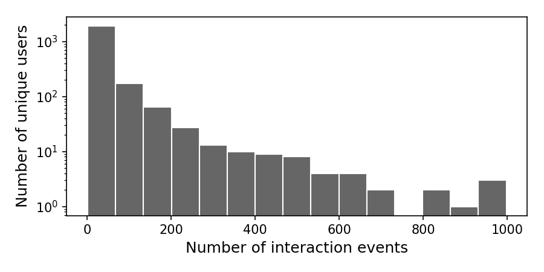Distribution of users by the number of map interaction events (2017)
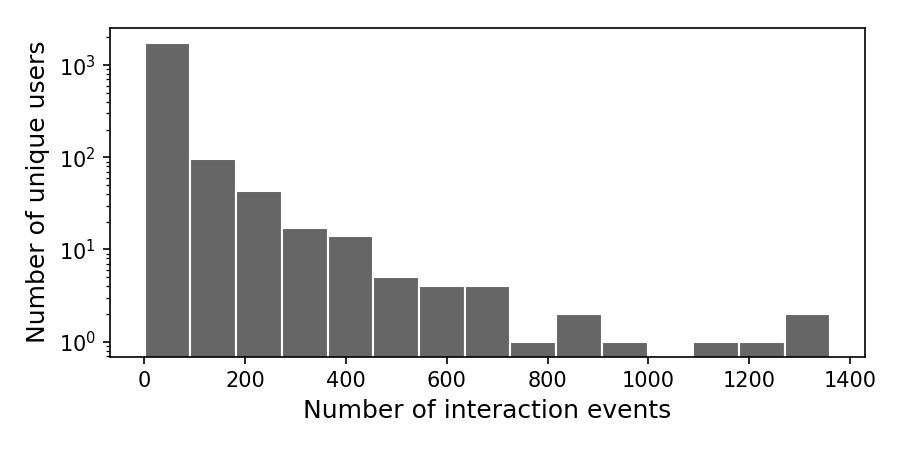We also assessed the number of unique users for each day. In the figures below, a darker color indicates a larger volume of unique users on that date. The second figure below shows the air quality index (AQI) from four pollutants: ozone (O3), particulate matter (PM2.5 and PM10), carbon monoxide (CO), and sulfur dioxide (SO2). The concentrations of the pollutants were obtained from monitoring stations in Pittsburgh operated by the Allegheny County Health Department. We computed the AQI based on the the EPA guidelines. A darker color in the second figure indicates a higher AQI. The correlation between these two metrics (number of unique users and AQI) was 0.50 in 2019, 0.54 in 2018, and 0.44 in 2017. This indicates that air quality was a moderately important driver of user engagement.

{kind=link}
{kind=link}
{kind=link}
{kind=link}
{kind=link}
{kind=link}
{kind=link}
{kind=link}
{kind=link}
{kind=link}
{kind=link}
{kind=link}
{kind=link}
{kind=link}
{kind=link}
{kind=link}
{kind=link}
Distribution of Smell Reports Aggregated by Time
To investigate the concentration of smell reports across time, we computed the average number of smell reports per day, aggregated by hour of day and day of week. The following figures show that most reports were submitted during morning hours, and rarely at nighttime. For 2017 and 2018, more smell reports were received during weekdays compared to weekends. Reports in 2018 and 2019 were more evenly distributed, while the 2017 reports were concentrated on Wednesday mornings.
Average number of reports per day (2019)

Average number of reports per day (2018)

Average number of reports per day (2017)

Moreover, we computed the average number of smell reports per day, aggregated by hour of day and month. Reports in 2017, 2018, and 2019 were disparately distributed across the different months, which indicates different pollution and engagement patterns.
Average number of reports per day (2019)

Average number of reports per day (2018)

Average number of reports per day (2017)

Distribution of Smell Reports Aggregated by Region
The following maps show the distribution of smell reports by Pittsburgh area zip codes for 2017, 2018, and 2019. A darker color indicates more reports in an area. Note that this map indicates citizen engagement with the Smell PGH app, but does not necessarily represent the severity of pollution in that region. In general, citizen engagement was increased over the three years, especially from 2018 to 2019.
Number of smell reports by zip codes (2019)
Number of smell reports by zip codes (2018)
Number of smell reports by zip codes (2017)
Also, the number of our users increased over these three years in Pittsburgh. The following maps show the distribution of unique users by Pittsburgh area zip codes for 2017, 2018, and 2019. A darker color indicates more unique users in an area.
Number of unique users by zipcodes (2019)
Number of unique users by zipcodes (2018)
Number of unique users by zipcodes (2017)
Content Analysis of Smell Reports
To identify critical topics in citizen-contributed smell reports, we analyzed the frequency of words (unigram) and phrases (bigram) in the text fields. The following figures show that the majority of user comments described industrial pollution odors and symptoms related to air pollution exposure. Odor descriptions and symptoms were frequently linked to hydrogen sulfide, which has a "rotten egg" smell and is known to cause symptoms of headaches, dizziness, eye irritation, sore throat, cough, nausea, and shortness of breath (Reiffenstein et al., 1992; Guidotti, 2010).
Content analysis (2019)

Content analysis (2018)

Content analysis (2017)

Relationship between Smell Reports and Pollutants
Comments from Smell PGH users and Pittsburgh community members suggested that hydrogen sulfide might be the primary source of pollution odors in the area. We used statistical methods to analyze the relationship between a subset of smell reports and hydrogen sulfide concentrations, as measured by county monitors in the region. The figure below shows the result for 23 months of data (10/31/2016 to 9/27/2018). Note that this identified relationship does not imply causation.

The decision tree (Quinlan, 1986) depicted above is analogous to how a medical doctor may diagnose a patient. The top level of the tree shows the most influential predictor, which is the interaction between wind direction at the Parkway monitoring station and hydrogen sulfide concentration at the Liberty monitoring station. The Allegany County Health Department operates these monitoring stations. Based on this finding, we investigated this relationship further, by date.
We compared two metrics that are related to smell reports and data from county air quality monitors, respectively. The first metric shows the sum of smell ratings for each day, excluding reports with ratings that are less than three. A darker color indicates a larger volume of smell reports on that date. The second metric shows the maximum concentration of hydrogen sulfide per day, weighted by the contributions of the wind directions (from the south and the east) at both the Parkway and Liberty monitoring stations. The formula for each hourly measurement is:
where represents the concentration of hydrogen sulfide in parts per billion (ppb) of the Liberty monitoring station,
is the wind direction at the Liberty monitoring station,
and
is the wind direction at the Parkway monitoring station.
A darker color in the second metric indicates a larger concentration of hydrogen sulfide in the area.
The correlation between these two metrics (the sum of smell ratings and the maximum weighted concentration of hydrogen sulfide per day) was 0.59 in 2019, 0.64 in 2018, and 0.65 in 2017.
This indicates that hydrogen sulfide was a significant driver of smell reports in these three years.
Sum of smell ratings by date (2019)

Maximum of weighted hydrogen sulfide concentration by date (2019)

Sum of smell ratings by date (2018)

Maximum of weighted hydrogen sulfide concentration by date (2018)

Sum of smell ratings by date (2017)

Maximum of weighted hydrogen sulfide concentration by date (2017)